Impact of Covid on US Aviation Industry
Project Context
-
Goal
The coronavirus pandemic caused a severe impact on the aviation industry throughout 2020, leading to an enormous reduction in revenue streams of air carriers that couldn't cover the costs of operating. The pandemic's effect has continued into 2021, with airlines struggling to cope with the Covid 19 situation. This project aims to conduct a visual analysis of the impact of Covid-19 on the domestic airline industry and its recovery progress.
-
Result
A report containing different useful graphs and appropriate information is generated to present the results. With the aid of this report, well-informed decisions can be made, expenses can be reduced, and processes can be enhanced.
Role
Data Analyst
Time
4 weeks
Tool
- D3.js
- Plotly
- Observable Notebook
US Domestic Airlines Revenue Observation
-
The plot comparing operating revenue and net income for domestic airlines from 2011 to 2022 reveals a stark contrast in the financial performance of the industry
As we can see from the chart, because of the pandemic the air transport system virtually came to a halt. With strict travel restrictions and quarantine requirements, passengers became less interested in air travel. Airline revenue streams were immensely low, and the damage to the airline industry was devastating.
- 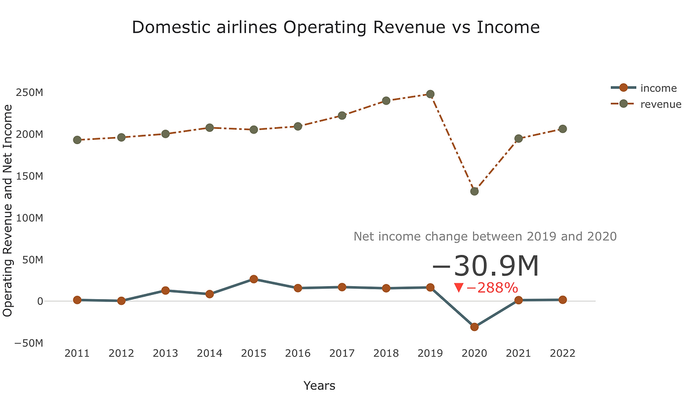
-
The year 2020 marked the worst financial year for domestic airlines in the last 12 years, with a net income of -30M which is 288 percent drop from 2019 net income. However, the industry has shown signs of improvement in 2021 and 2022, with net incomes of 1.16M and 1.63M, respectively. Yet, the data indicates that the sector is still falling short of its financial performance in 2019. These findings highlight the significant impact of the Covid-19 pandemic on the domestic airline industry and the need for continued efforts to recover from the financial fallout.
-
Interactively choose one domestic airline by using the selection widget and compare the net income and profit loss from 2011 to 2020
First, here I am using bubbles to graphically show the relative workforce sizes of each airline, and utilizing this plot to represent all domestic US airlines by employee size. Airlines with more employees are represented by larger bubbles, while those with fewer employees are represented by smaller bubbles. We can quickly and simply compare the staff sizes of US domestic airlines using this visualization.
- 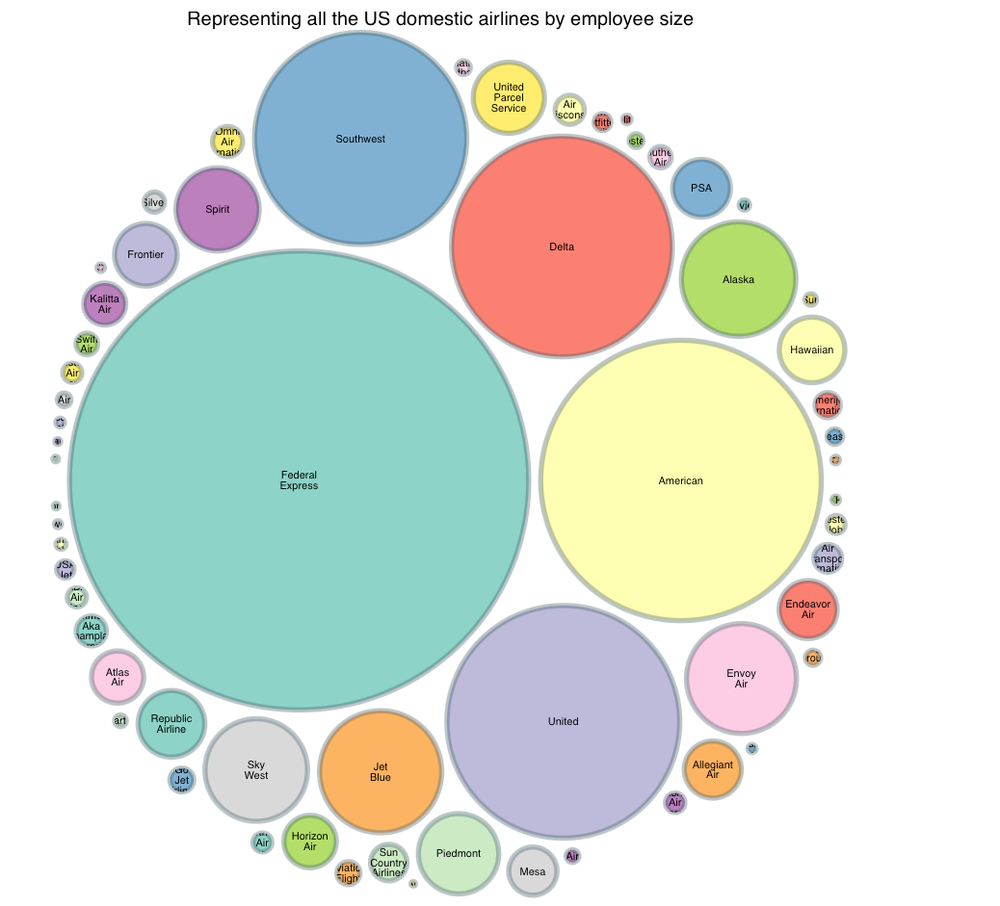
-
Next, select an airline from the dropdown menu and visually analyze its income and profit-loss.
- 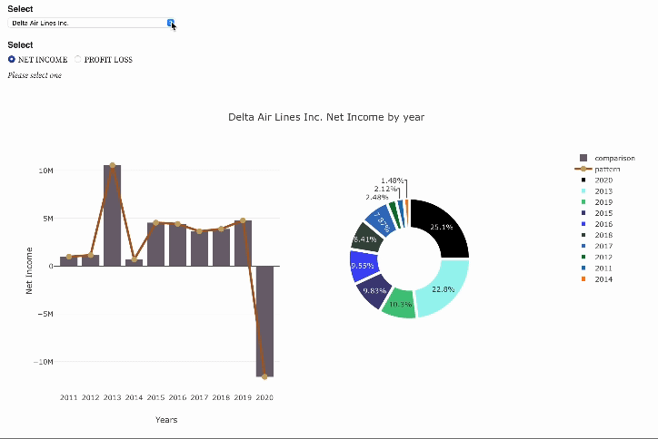
-
The plot above representing Delta Air Lines Inc.'s Profit-Loss from 2011 to 2020 revealing the airline's financial performance over time. The bar plot shows the Profit-Loss for each year, while the line plot illustrating the trend in Delta Air Lines Inc.'s Profit-Loss over the decade.
In the pie chart of the revenue or income for the airline company from 2011 to 2020, I utilized black color to show any losses or negative numbers. For example, in 2020 Delta Air Lines Inc. had a huge loss which is easily visible in the pie chart.
-
Compare up to three domestic airlines performance in terms of net income and profit loss
To conduct the analysis, I obtained financial data of the domestic airlines from bts.gov for the period of 2011 to 2020 and then created line plots to show the net income and profit loss of three selected airlines over the years. I also used bar plots to compare the performance of the airlines in terms of net income and profit loss for each year.
- 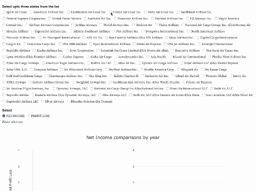
-
The line plot shows the trend of net income and profit loss of the three airlines from 2011 to 2020. As shown in the figure above, all three airlines experienced fluctuations in their net income and profit loss over the years. However, Delta Airlines and United Airlines followed almost similar trend in their net income and profit loss, whereas Southwest Airlines had a little more stable pattern until 2019. All three airlines experienced a significant decline in net income and profit in 2020 compared to the previous years.
The bar chart above compares the three airlines' annual net revenue and profit loss from 2011 to 2020. When compared to the other two airline companies, Delta Airlines had the greatest net income in most years and suffered the most in 2020. However, in terms of profit loss, United Airlines had the highest loss in 2020, followed by Delta and Southwest.
Demand and Capacity Comparison
-
Comparing demand against previous year and pre pandemic level
The Covid-19 pandemic has had a significant impact on the domestic air industry, resulting in decreased passenger demand and passenger traffic. To better understand the industry's recovery, comparing revenue passenger miles (RPM) - passenger traffic data from 2011 to 2022 is crucial.
- 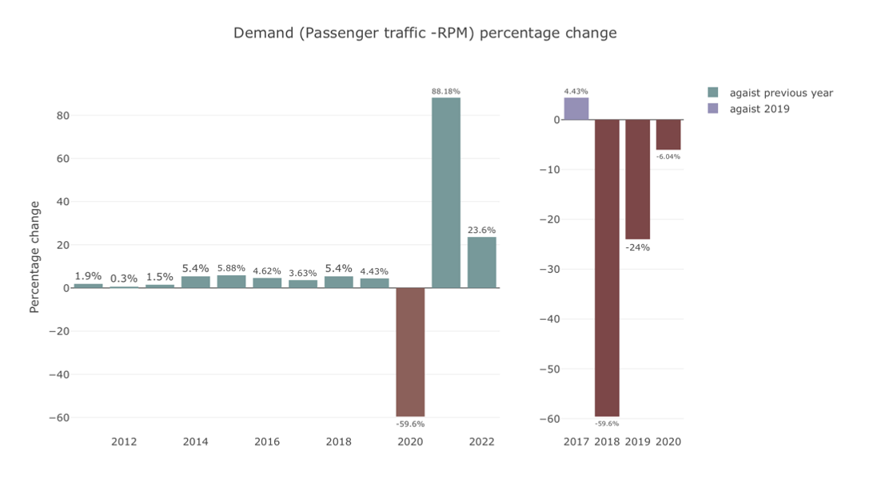
-
The first plot provides a year-over-year comparison, indicating an overall upward trend in the industry's demand. However, the second plot, which compares demand against 2019, helps us understand the impact of the pandemic and the industry's recovery. From the first plot we see from 2020 to 2021 demand increased by 88 percent, but second plot depict the whole story. In 2021 demand is still 24 percent below compare to pre pandemic. Despite the pandemic's impact, the data reveals the industry is returning to pre pandemic level in 2023.
-
Comparing capacity against previous year and pre pandemic level
Comparing domestic air industry capacity using available seat miles (ASM) and passenger capacity data from 2011 to 2022 can provide valuable insights into the industry's growth and resilience. By examining year-over-year comparisons in the first plot, we can observe patterns and trends in the industry's capacity. The second plot focuses on the industry's recovery from the Covid-19 pandemic by comparing against 2019, the last year before the pandemic. This comparison enables us to understand how quickly the industry is recovering and whether it has fully regained its pre-pandemic capacity. Overall, such analyses can help stakeholders in the air industry make informed decisions and plan for the future.
- 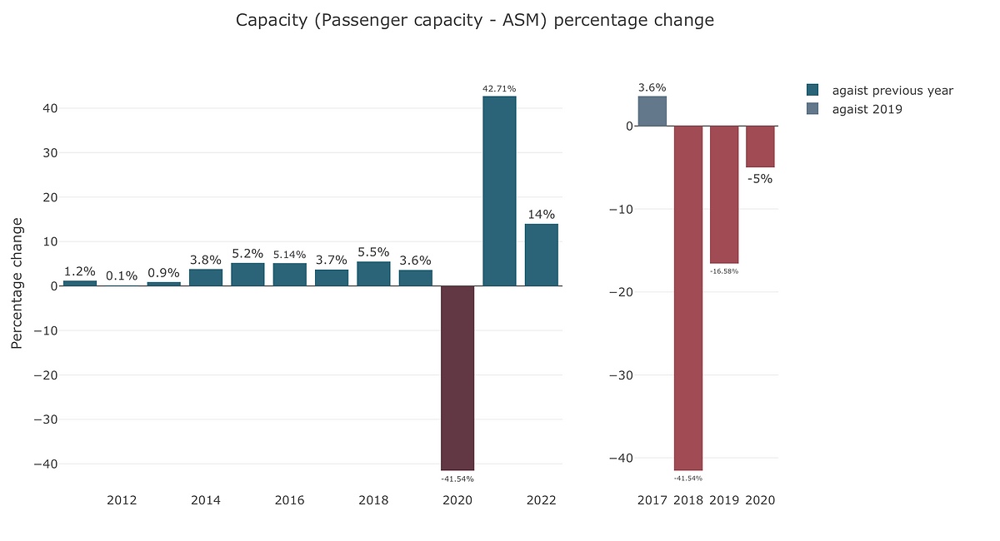
US Busiest Airports Performance
-
Visually comparing performance based on domestic and international passengers and flights number of 10 busiest US airports interactively choosing from the years 2011 to 2022
Here the map is created by representing every US airport as a point, with its location determined by its latitude and longitude coordinates. Based on the states in which they are located, points are colored. This simple yet informative data visualization highlights the geographical distribution of airports across the United States, enabling easy identification of airport clusters and patterns.
The top ten busiest airports by flight numbers in the first plot are indicated with purple bubbles, with the size of the bubbles depending on the number of flights.
- 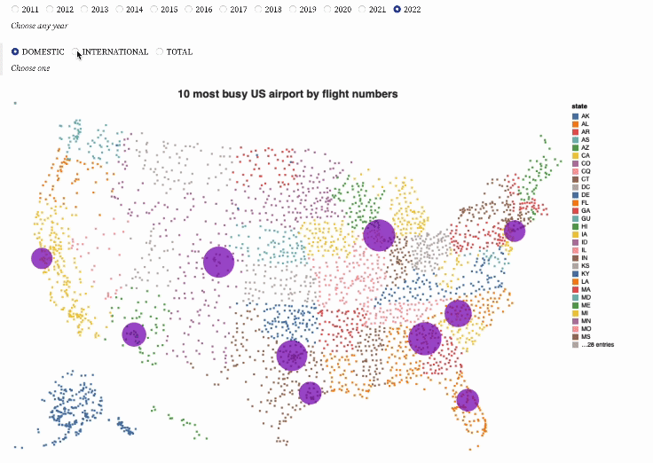
-
In the second plot, the top ten busiest airports in the United States are highlighted using dark purple bubbles, with the size of each bubble corresponding to the number of passengers passing through the airport. This plot is very useful in identifying which airports have the highest passenger traffic, as well as identifying trends and patterns in air travel across the country.
- 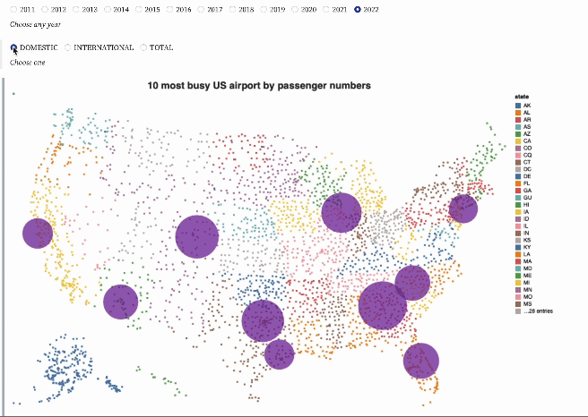
-
Here Orlando International Airport is being chosen for further analysis
Orlando International Airport (MCO) is one of the busiest airports in the United States, serving millions of passengers every year. The pandemic has had a significant effect on the aviation industry, and MCO was no exception. In this section, to investigate Orlando International Airport's (MCO) performance and recovery from covid, will analyze the passenger traffic, flight numbers, and revenue passenger miles at MCO from 2011 to 2022.
- 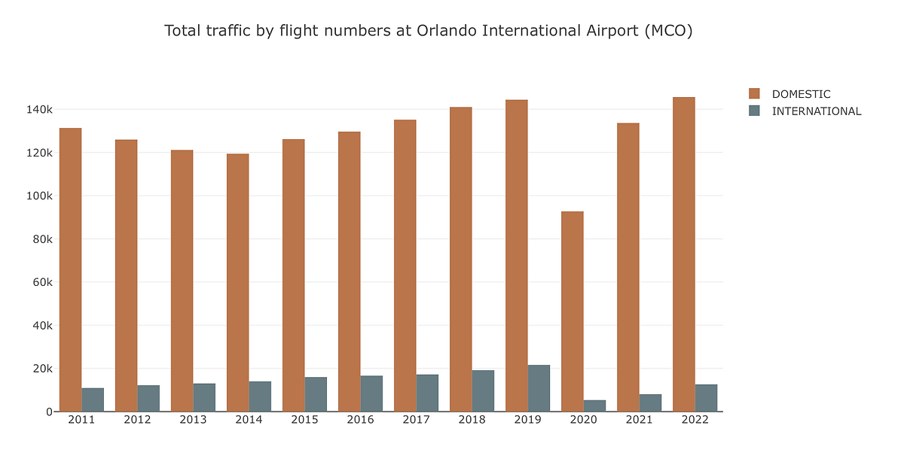
-
The plot above shows the total passenger traffic at MCO, and it reveals an upward trend in both domestic and international flights over the years. In 2011, the domestic passenger count was approximately 16 million, and it increased to 22 million in 2022. Similarly, the international passenger count rose from 1.6 million to almost 2 million during the same period.
But if we look at the year 2020, total passenger traffic at MCO decreased by 57% compared to 2019, with a total of 14 million passengers. The domestic passenger count decreased by 54%, and the international passenger count decreased by 78%. In 2022 domestic passenger traffic reached the pre pandemic level but international traffic is still 40% below than the pre pandemic level.
- 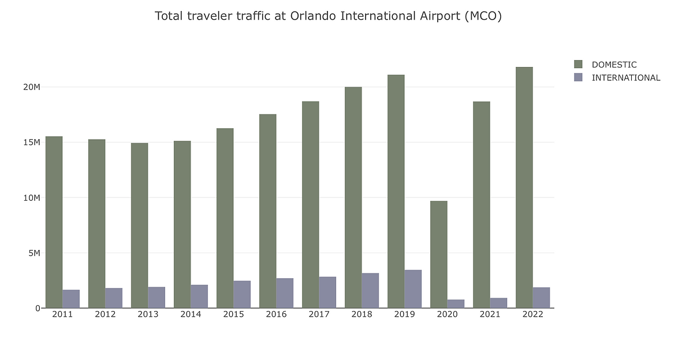
-
The second plot illustrates the flight numbers at MCO, and it displays a similar trend to the passenger traffic plot. In 2011, there were around 131000 domestic flights and 11,000 international flights. These numbers were 144407 and 21638 respectively in 2019. But because of the pandemic in 2020, domestic flight number went down to only 92732 which is 56% below compare to 2019 flight numbers and international flights reduced by 75%.
The third plot depicts the revenue passenger miles (RPM) at MCO. RPM is a measure of how many miles passengers travel on an airline. Throughout time, the RPM for both domestic and international flights grew, but it sharply decreased in 2020. Like passenger traffic and flight numbers, domestic RPM surpassed 2019 RPM level in 2022. International flights RPM, however, is still about 50% below its pre-pandemic level.
- 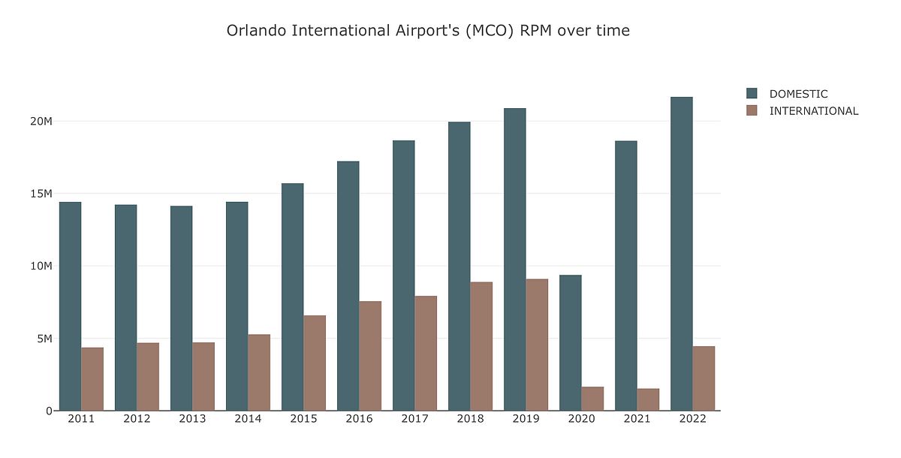
-
In conclusion, the Covid-19 pandemic caused a severe impact on the aviation industry, leading to a significant reduction in revenue streams of air carriers. However, domestic air travel has fared better than international air travel due to several reasons. The domestic airline industry is gradually recovering from the effects of the pandemic, and airline companies are implementing strict health measures to ensure passenger safety and regain their trust. The visual analysis of the number of domestic flights operated by selected airline companies in the United States shows that the domestic airline industry is recovering gradually, and significant progress has been made in the industry's recovery.
Data Source
-
a) US Domestic Airlines Revenue Observation: https://www.transtats.bts.gov/Data_Elements_Financial.aspx?Qn6n=J
-
b) Demand and Capacity Comparison: https://www.iata.org/en/pressroom/pr/2020-11-24-01/
-
c) List of us airports: https://vega.github.io/vega-tutorials/airports/data/airports.csv